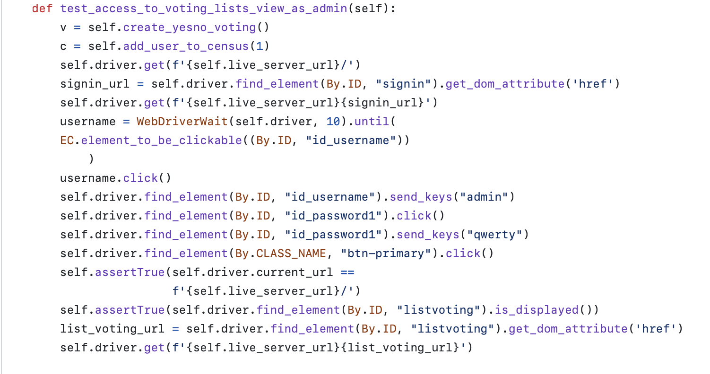
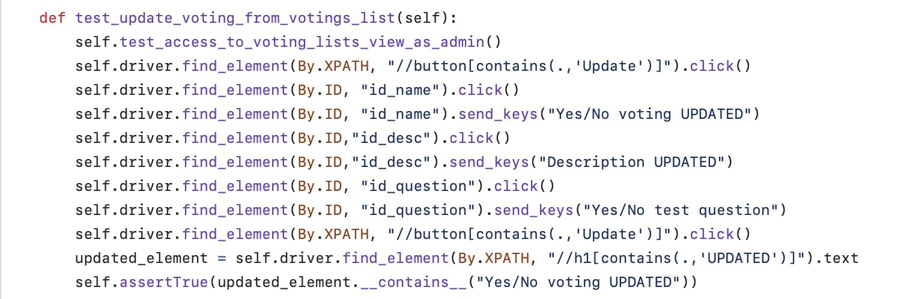
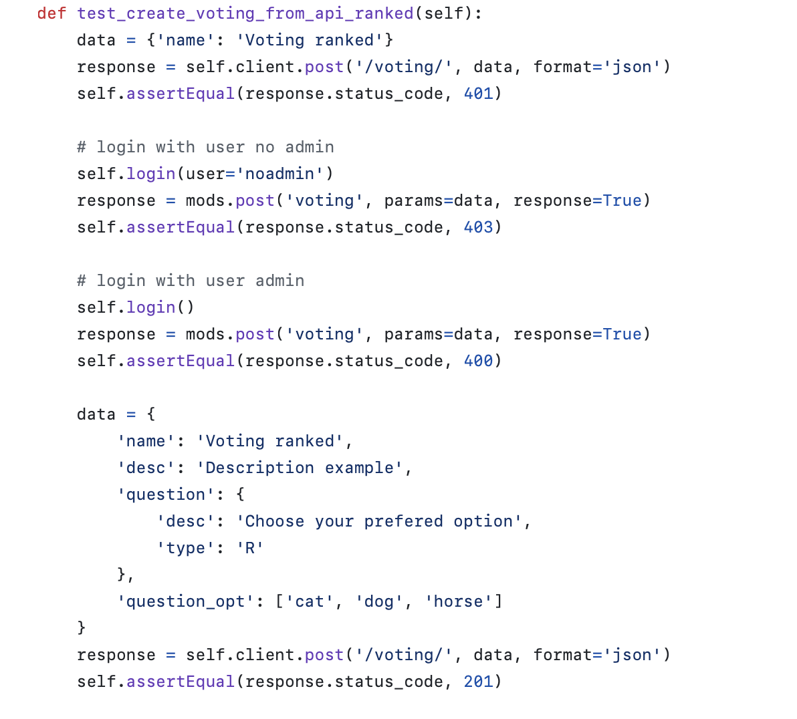
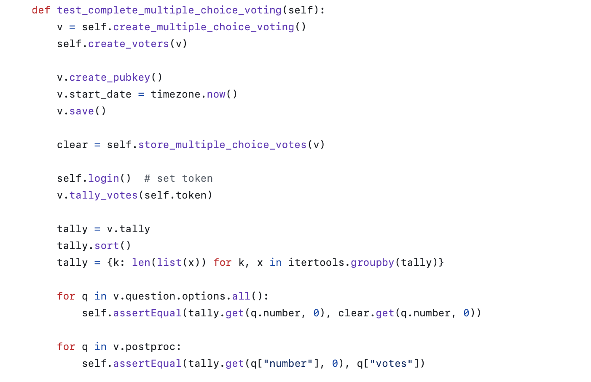
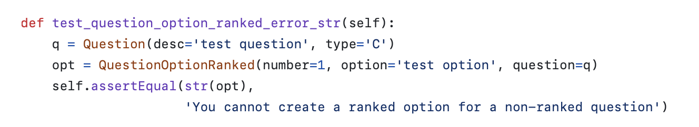

Informe de pruebas
Este documento recopila y detalla las pruebas implementadas en el proyecto de decide-part-lorca, proporcionando información crucial sobre la validación y funcionamiento de sus componentes. Además, presenta ejemplos prácticos que ilustran el uso correcto y las funcionalidades clave del proyecto.
Tabla de Contenidos#
1. Introducción#
Para nuestro proyecto hemos decidido implementar tipos diferentes pruebas en función del módulo al que pertenezcan. En concreto:
Voting: Pruebas de vistas dinámicas, estáticas, unitarias y de integración.
Booth: Pruebas de vistas dinámicas y de carga.
Store: Pruebas de vistas estáticas y unitarias.
Authentication: Pruebas de vistas dinámicas y estáticas.
Census: Pruebas de vistas dinámicas, estáticas, unitarias y de integración.
Visualizer: Pruebas de vistas dinámicas. Además, consideramos importante comentar que debido a que Github Actions algunas veces no ejecuta correctamente las pruebas de vista, hemos decidido no ejecutarlas de forma automática, sino que se ejecutan de forma manual en el entorno de desarrollo. Se ha utilizado
@nottestpara que no se ejecuten de forma automática.
2. Pruebas#
2.1. Pruebas de vistas dinámicas#
decide/voting/test_configurator_selenium.py
 
Estos tests pertenecen a una suite de pruebas de vista, ya que utilizan Selenium para simular la interacción de un usuario real con la interfaz de usuario en un navegador web. Además, también son pruebas de persistencia, ya que almacenan información necesaria para las pruebas en la base de datos.
Para ejecutar estas pruebas en local, es necesario ejecutar los siguientes comandos:
Votación múltiple
./manage.py test booth.test_selenium.MultipleChoiceQuestionBoothTest -v 2Votación Sí/No
./manage.py test booth.test_selenium.YesNoBoothTest -v 2Votación Comentario
./manage.py test booth.test_selenium.CommentBoothTest -v 2Votación Preferencia
./manage.py test booth.test_selenium.PreferenceBoothTest -v 2
2.2. Pruebas de vistas estáticas#
decide/voting/tests.py

Prueba la funcionalidad expuesta a través de una API, verificando las respuestas y el comportamiento ante solicitudes a la API para crear una votación por preferencia.2.3. Pruebas de integración#
decide/voting/tests.py

Estas pruebas verifican la interacción entre componentes más grandes del sistema, en concreto el proceso de realización de una votación de opción múltiple completa.2.4. Pruebas unitarias#
decide/voting/tests.py

Estas pruebas se centran en funciones o métodos específicos para asegurar que cada unidad funcione correctamente. En este caso en concreto, una prueba negativa de creación de una pregunta de preferencia. Además, también son pruebas sin persistencia, ya que no almacenan en la base de datos ninguna información
2.5. Pruebas de carga#
Al igual que hemos visto en las prácticas, se han diseñado tres pruebas de carga, una para las votaciones, otra para el booth, y una última para la página de inicio. Para ver las pruebas de carga, acceda a la carpeta loadtests en el directorio raíz del proyecto.
Antes de ejecutar las pruebas de carga, es necesario que decide esté ejecutansose en otra consola (si lo estamos probando en local), además de contar con una votación abierta y haber ejecutado el script de generación de censo gen_census.py.
Prueba de carga de votación Esta prueba se basa en la ya existente para probar votaciones. Para nuestro proyecto, hemos actualzado esta prueba de carga para que tenga en cuenta el tipo de votación a probar, además de simular peticiones de acceso a la cabina de votación. Para ejecutar esta prueba de carga, ejecute el siguiente comando(requiere tener una votación abierta, cuyo id y tipo deben indicarse en la variable VOTING, VOTING_TYPE):
locust VotersPrueba de carga de página de inicio Esta prueba simula las peticiones de usuarios que acceden a la página de inicio y posteriormente inician sesión. Para ejecutar esta prueba de carga, ejecute el siguiente comando:
locust HomePrueba de carga de cabina de votación Esta prueba simplemente simula las peticiones de un usuario que accede a la cabina de votación. Para ejecutar esta prueba de carga, ejecute el siguiente comando (requiere tener una votación abierta, cuyo id debe indicarse en la variable VOTING):
locust Booth
3. Técnica de Diseño de Casos de Prueba#
La mayoría de los tests siguen una estrategia basada en casos de uso. Cada método de prueba simula un caso de uso específico (por ejemplo, acceso como administrador, usuario no administrador, inicio o detención de votaciones, etc.). La división por funcionalidades indica un enfoque modular en el diseño de casos de prueba.